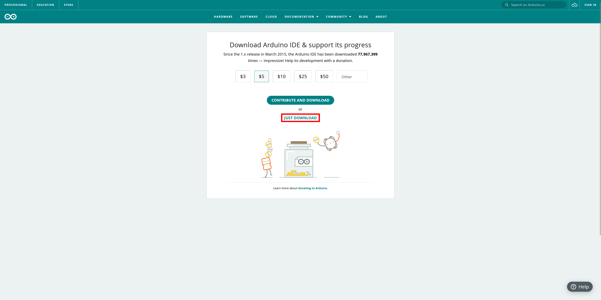
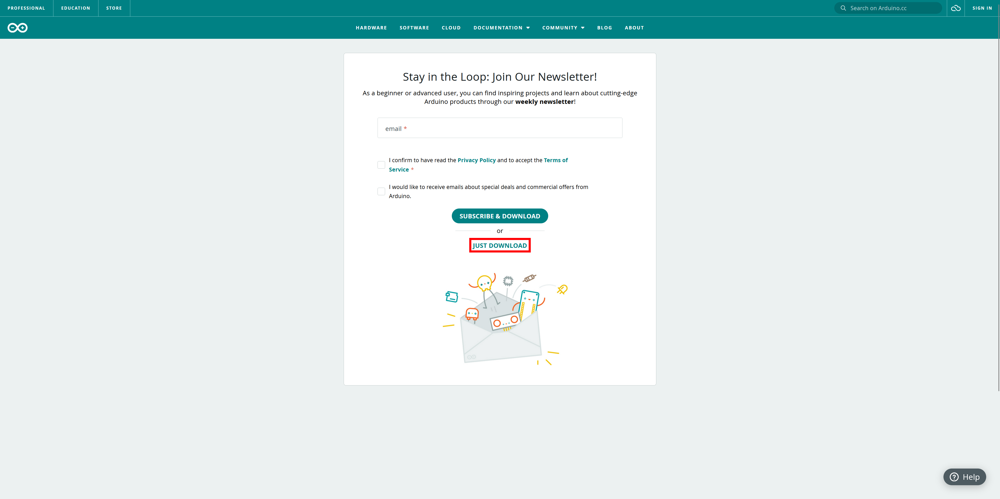

Installing Arduino IDE
To program the Destination Weather Station, you will need to download and install Arduino IDE.
Download
To begin, navigate to https://www.arduino.cc/en/software.
Click Windows Win 10 and newer, 64 bits under the most recent version of IDE. This may be different than the screenshot below
When the page loads, click next
 Installation
To install Arduino IDE, navigate to where you saved your arduino-ide_2.x.x_Windows_64bit.exe file and follow the instructions in the install.
Software Configuration
Board Manager
To properly configure IDE, the board manager for the XIAO RP2040 needs to be installed.
In Arduino IDE, navigate to File > Preferences. In the window, enter https://github.com/earlephilhower/arduino-pico/releases/download/global/package_rp2040_index.json into the Additional boards manager URLs: text box.
Click OK
Next, navigate to Tools > Board: > Boards Manager…. Search for Raspberry Pi Pico/RP2040 and click INSTALL on the option published by Earle F. Philhower, III.
Code Libraries
Several libraries are needed to upload code to the weather station.
To install these libraries, navigate to Tools > Manage Libraries…
In the search box enter the following library names and install each including any required dependancies.
Adafruit BME280 LibraryAdafruit LTR390 LibraryAdafruit SSD1306Adafruit VEML7700 LibraryENS160 - Adafruit ForkSensirion I2C SCD4x